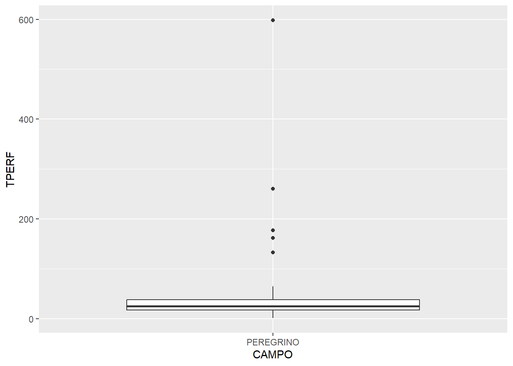
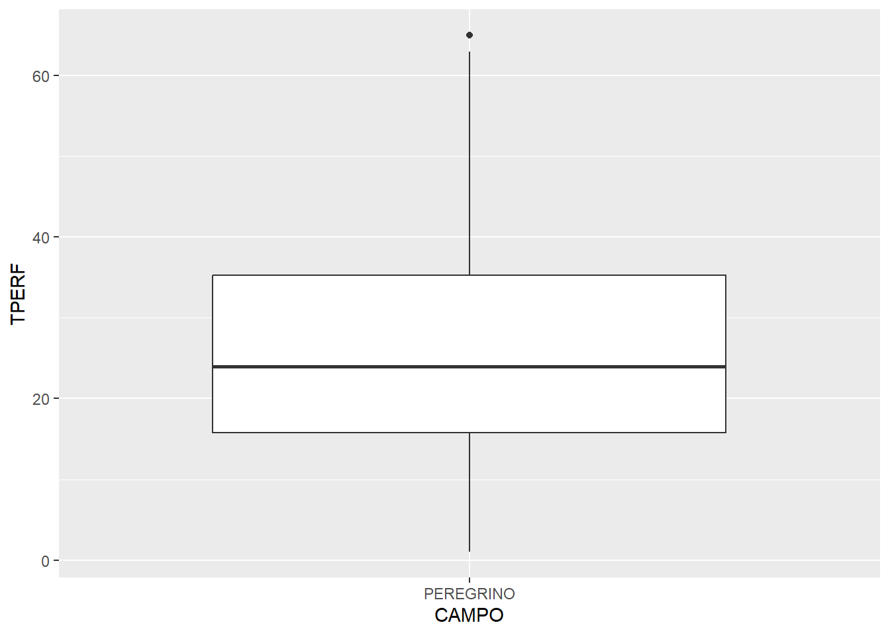
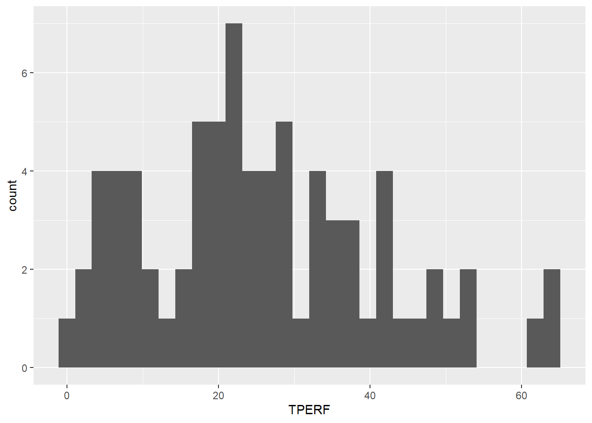
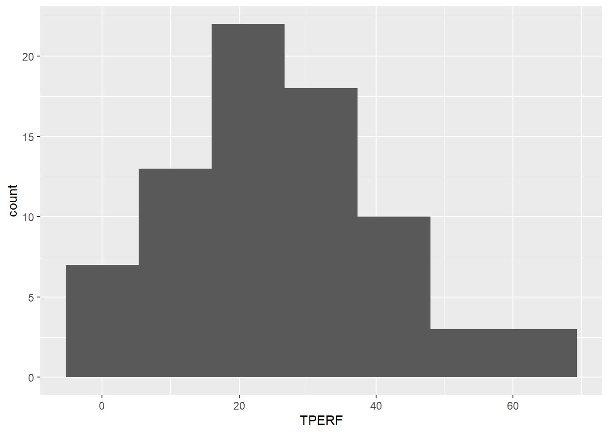
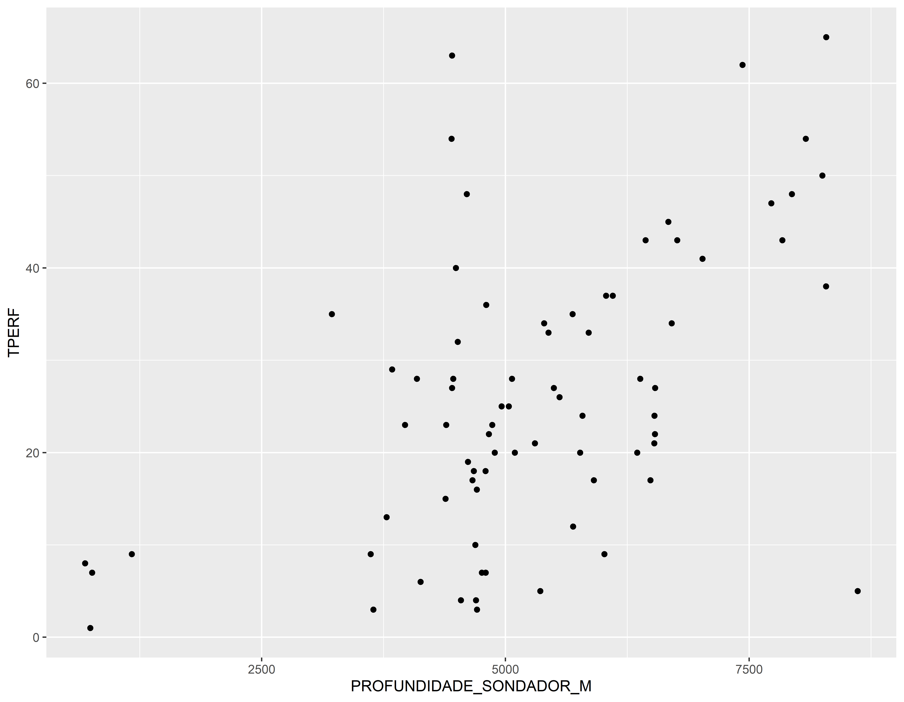

Carregando dados, Manipulando e Visualizando
Entrada de dados no R
Lendo dados de arquivos csv
O read_delim permite que seja definido o tipo de delimitador dos dados
pocos <- read_delim(url, delim = ";", locale= locale(decimal_mark = ","), col_names = TRUE)#> Rows: 30566 Columns: 60
#> ── Column specification ────────────────────────────────────────────────────────
#> Delimiter: ";"
#> chr (51): POCO, CADASTRO, OPERADOR, POCO_OPERADOR, ESTADO, BACIA, BLOCO, SIG...
#> dbl (8): LATITUDE_BASE_DD, LONGITUDE_BASE_DD, PROFUNDIDADE_VERTICAL_M, PROF...
#> lgl (1): UNIDADE_ESTRATIGRAFICA
#>
#> ℹ Use `spec()` to retrieve the full column specification for this data.
#> ℹ Specify the column types or set `show_col_types = FALSE` to quiet this message.head(pocos)#> # A tibble: 6 × 60
#> POCO CADASTRO OPERADOR POCO_OPERADOR ESTADO BACIA BLOCO SIG_CAMPO CAMPO
#> <chr> <chr> <chr> <chr> <chr> <chr> <chr> <chr> <chr>
#> 1 7-PRG-59H-… 7428102… Equinor… BMC7B15 RJ Camp… <NA> "PRG " PERE…
#> 2 7-GVR-26D-… 5009002… Eneva 7GVR26DMA MA Parn… PN-T… "GVR " GAVI…
#> 3 6-BRSA-134… 7428102… Petrobr… 6MLS233RJS RJ Camp… <NA> "MLS " MARL…
#> 4 7-CP-1505D… 9012002… Carmo 7CP1505DSE SE Serg… <NA> "CP " CARM…
#> 5 7-GVP-6-MA 5009002… Eneva 7GVP6MA MA Parn… PN-T… "GVP " GAVI…
#> 6 7-TIE-1D-BA 2024002… SPE Tiê… 7TIE1DBA BA Recô… <NA> "TIE " TIÊ
#> # ℹ 51 more variables: TERRA_MAR <chr>, POCO_POS_ANP <chr>, TIPO <chr>,
#> # CATEGORIA <chr>, RECLASSIFICACAO <chr>, SITUACAO <chr>, INICIO <chr>,
#> # TERMINO <chr>, CONCLUSAO <chr>, TITULARIDADE <chr>, LATITUDE_BASE_4C <chr>,
#> # LONGITUDE_BASE_4C <chr>, LATITUDE_BASE_DD <dbl>, LONGITUDE_BASE_DD <dbl>,
#> # DATUM_HORIZONTAL <chr>, TIPO_DE_COORDENADA_DE_BASE <chr>, DIRECAO <chr>,
#> # PROFUNDIDADE_VERTICAL_M <dbl>, PROFUNDIDADE_SONDADOR_M <dbl>,
#> # PROFUNDIDADE_MEDIDA_M <dbl>, REFERENCIA_DE_PROFUNDIDADE <chr>, …Bibliotecas
Vamos carregar as bibliotecas que serão usadas na manipulação e visualização de dados.
O pacote tidyverse carrega diversos pacotes muito uteis na manipulação e visualização de dados
Vamos primeiro conhecer o que tem na base de dados pocos. A base de dados possui 30566 linhas
class(pocos) # Tipo de base de dados#> [1] "spec_tbl_df" "tbl_df" "tbl" "data.frame"Dados de poços
Os dados da tabela poços tem 60 colunas, mas vejam que existem diversas variáveis com dados ausentes “NA”.
Variaveis com dados ausentes
str(pocos) # estrutura da base de dados#> spc_tbl_ [30,566 × 60] (S3: spec_tbl_df/tbl_df/tbl/data.frame)
#> $ POCO : chr [1:30566] "7-PRG-59H-RJS" "7-GVR-26D-MA" "6-BRSA-1349-RJS" "7-CP-1505D-SE" ...
#> $ CADASTRO : chr [1:30566] "74281028968" "50090029009" "74281028991" "90120029391" ...
#> $ OPERADOR : chr [1:30566] "Equinor Brasil" "Eneva" "Petrobras" "Carmo" ...
#> $ POCO_OPERADOR : chr [1:30566] "BMC7B15" "7GVR26DMA" "6MLS233RJS" "7CP1505DSE" ...
#> $ ESTADO : chr [1:30566] "RJ" "MA" "RJ" "SE" ...
#> $ BACIA : chr [1:30566] "Campos" "Parnaíba" "Campos" "Sergipe" ...
#> $ BLOCO : chr [1:30566] NA "PN-T-68" NA NA ...
#> $ SIG_CAMPO : chr [1:30566] "PRG " "GVR " "MLS " "CP " ...
#> $ CAMPO : chr [1:30566] "PEREGRINO" "GAVIÃO REAL" "MARLIM SUL" "CARMÓPOLIS" ...
#> $ TERRA_MAR : chr [1:30566] "M" "T" "M" "T" ...
#> $ POCO_POS_ANP : chr [1:30566] "S" "S" "S" "S" ...
#> $ TIPO : chr [1:30566] "7 " "7 " "6 " "7 " ...
#> $ CATEGORIA : chr [1:30566] "Desenvolvimento" "Desenvolvimento" "Jazida Mais Profunda" "Desenvolvimento" ...
#> $ RECLASSIFICACAO : chr [1:30566] "INDEFINIDO" "ABANDONADO POR OUTRAS RAZÕES" "DESCOBRIDOR DE NOVA JAZIDA PETRÓLEO" "PRODUTOR COMERCIAL DE PETRÓLEO" ...
#> $ SITUACAO : chr [1:30566] "ABANDONADO PERMANENTEMENTE" "ARRASADO" "PRODUZINDO" "PRODUZINDO" ...
#> $ INICIO : chr [1:30566] "24/04/2017 00:00" "21/06/2017 00:00" "28/05/2017 00:00" "24/05/2019 00:00" ...
#> $ TERMINO : chr [1:30566] "01/05/2017 00:00" "05/07/2017 00:00" "16/07/2017 00:00" "04/06/2019 00:00" ...
#> $ CONCLUSAO : chr [1:30566] "13/05/2017 00:00" "11/07/2017 00:00" "30/07/2017 00:00" "06/06/2019 00:00" ...
#> $ TITULARIDADE : chr [1:30566] "Público" "Público" "Público" "Público" ...
#> $ LATITUDE_BASE_4C : chr [1:30566] "-23:17:45,778" "-04:51:16,170" "-22:30:54,291" "-10:38:21,087" ...
#> $ LONGITUDE_BASE_4C : chr [1:30566] "-41:12:28,246" "-44:22:32,123" "-40:01:09,068" "-36:58:50,405" ...
#> $ LATITUDE_BASE_DD : num [1:30566] -23.3 -4.85 -22.52 -10.64 -4.68 ...
#> $ LONGITUDE_BASE_DD : num [1:30566] -41.2 -44.4 -40 -37 -44.7 ...
#> $ DATUM_HORIZONTAL : chr [1:30566] "SIRGAS2000" "SIRGAS2000" "SIRGAS2000" "SIRGAS2000" ...
#> $ TIPO_DE_COORDENADA_DE_BASE: chr [1:30566] "Definitiva" "Definitiva" "Definitiva" "Definitiva" ...
#> $ DIRECAO : chr [1:30566] "Horizontal" "Direcional" "Vertical" "Direcional" ...
#> $ PROFUNDIDADE_VERTICAL_M : num [1:30566] 760 1471 -4572 -835 1344 ...
#> $ PROFUNDIDADE_SONDADOR_M : num [1:30566] 760 2210 4600 935 1430 ...
#> $ PROFUNDIDADE_MEDIDA_M : num [1:30566] 760 2211 4604 934 1430 ...
#> $ REFERENCIA_DE_PROFUNDIDADE: chr [1:30566] "MR" "MR" "MR" "MR" ...
#> $ MESA_ROTATIVA : num [1:30566] 50 143 32 55.8 86 ...
#> $ COTA_ALTIMETRICA_M : num [1:30566] 0 137 0 50.8 80 ...
#> $ LAMINA_D_AGUA_M : num [1:30566] 122 0 1107 0 0 ...
#> $ DATUM_VERTICAL : chr [1:30566] "NM" "NM" "NM" "NM" ...
#> $ UNIDADE_ESTRATIGRAFICA : logi [1:30566] NA NA NA NA NA NA ...
#> $ GEOLOGIA_GRUPO_FINAL : chr [1:30566] "Campos" "Canindé" "Lagoa Feia" "Coruripe" ...
#> $ GEOLOGIA_FORMACAO_FINAL : chr [1:30566] "Carapebus" "Poti" "Macabu" "Barra de Itiuba" ...
#> $ GEOLOGIA_MEMBRO_FINAL : chr [1:30566] NA NA NA NA ...
#> $ CDPE : chr [1:30566] "Existe" "Existe" "Existe" "Existe" ...
#> $ AGP : chr [1:30566] NA NA NA NA ...
#> $ PC : chr [1:30566] NA NA "Existe" NA ...
#> $ PAG : chr [1:30566] NA "Existe" "Existe" NA ...
#> $ PERFIS_CONVENCIONAIS : chr [1:30566] NA "Existe" "Existe" "Existe" ...
#> $ DURANTE_PERFURACAO : chr [1:30566] NA NA "Existe" NA ...
#> $ PERFIS_DIGITAIS : chr [1:30566] NA NA NA NA ...
#> $ PERFIS_PROCESSADOS : chr [1:30566] NA NA "Existe" "Existe" ...
#> $ PERFIS_ESPECIAIS : chr [1:30566] NA NA NA NA ...
#> $ AMOSTRA_LATERAL : chr [1:30566] NA NA "Existe" NA ...
#> $ SISMICA : chr [1:30566] NA NA "Existe" NA ...
#> $ TABELA_TEMPO_PROFUNDIDADE : chr [1:30566] NA NA "Existe" NA ...
#> $ DADOS_DIRECIONAIS : chr [1:30566] NA "Existe" "Existe" "Existe" ...
#> $ TESTE_A_CABO : chr [1:30566] NA "Existe" "Existe" "Existe" ...
#> $ TESTE_DE_FORMACAO : chr [1:30566] NA NA NA NA ...
#> $ CANHONEIO : chr [1:30566] NA NA NA "Existe" ...
#> $ TESTEMUNHO : chr [1:30566] NA NA NA NA ...
#> $ GEOQUIMICA : chr [1:30566] NA NA NA NA ...
#> $ SIG_SONDA : chr [1:30566] "DR-B" "GREAT120 (TUS 120)" "NS-33" "EBS-05" ...
#> $ NOM_SONDA : chr [1:30566] "DRILLINGRIG-B" "GREAT - 120" "NORBE IX" "EBS-05" ...
#> $ ATINGIU_PRESAL : chr [1:30566] "I" "I" "S" "I" ...
#> $ DHA_ATUALIZACAO : chr [1:30566] "05/11/2023 05:00" "05/11/2023 05:00" "05/11/2023 05:00" "05/11/2023 05:00" ...
#> - attr(*, "spec")=
#> .. cols(
#> .. POCO = col_character(),
#> .. CADASTRO = col_character(),
#> .. OPERADOR = col_character(),
#> .. POCO_OPERADOR = col_character(),
#> .. ESTADO = col_character(),
#> .. BACIA = col_character(),
#> .. BLOCO = col_character(),
#> .. SIG_CAMPO = col_character(),
#> .. CAMPO = col_character(),
#> .. TERRA_MAR = col_character(),
#> .. POCO_POS_ANP = col_character(),
#> .. TIPO = col_character(),
#> .. CATEGORIA = col_character(),
#> .. RECLASSIFICACAO = col_character(),
#> .. SITUACAO = col_character(),
#> .. INICIO = col_character(),
#> .. TERMINO = col_character(),
#> .. CONCLUSAO = col_character(),
#> .. TITULARIDADE = col_character(),
#> .. LATITUDE_BASE_4C = col_character(),
#> .. LONGITUDE_BASE_4C = col_character(),
#> .. LATITUDE_BASE_DD = col_double(),
#> .. LONGITUDE_BASE_DD = col_double(),
#> .. DATUM_HORIZONTAL = col_character(),
#> .. TIPO_DE_COORDENADA_DE_BASE = col_character(),
#> .. DIRECAO = col_character(),
#> .. PROFUNDIDADE_VERTICAL_M = col_double(),
#> .. PROFUNDIDADE_SONDADOR_M = col_double(),
#> .. PROFUNDIDADE_MEDIDA_M = col_double(),
#> .. REFERENCIA_DE_PROFUNDIDADE = col_character(),
#> .. MESA_ROTATIVA = col_double(),
#> .. COTA_ALTIMETRICA_M = col_double(),
#> .. LAMINA_D_AGUA_M = col_double(),
#> .. DATUM_VERTICAL = col_character(),
#> .. UNIDADE_ESTRATIGRAFICA = col_logical(),
#> .. GEOLOGIA_GRUPO_FINAL = col_character(),
#> .. GEOLOGIA_FORMACAO_FINAL = col_character(),
#> .. GEOLOGIA_MEMBRO_FINAL = col_character(),
#> .. CDPE = col_character(),
#> .. AGP = col_character(),
#> .. PC = col_character(),
#> .. PAG = col_character(),
#> .. PERFIS_CONVENCIONAIS = col_character(),
#> .. DURANTE_PERFURACAO = col_character(),
#> .. PERFIS_DIGITAIS = col_character(),
#> .. PERFIS_PROCESSADOS = col_character(),
#> .. PERFIS_ESPECIAIS = col_character(),
#> .. AMOSTRA_LATERAL = col_character(),
#> .. SISMICA = col_character(),
#> .. TABELA_TEMPO_PROFUNDIDADE = col_character(),
#> .. DADOS_DIRECIONAIS = col_character(),
#> .. TESTE_A_CABO = col_character(),
#> .. TESTE_DE_FORMACAO = col_character(),
#> .. CANHONEIO = col_character(),
#> .. TESTEMUNHO = col_character(),
#> .. GEOQUIMICA = col_character(),
#> .. SIG_SONDA = col_character(),
#> .. NOM_SONDA = col_character(),
#> .. ATINGIU_PRESAL = col_character(),
#> .. DHA_ATUALIZACAO = col_character()
#> .. )
#> - attr(*, "problems")=<externalptr>Criando um filtro de dados ausentes
n <- nrow(pocos)
## Calculando razão de valores ausentes
val_ausentes_df <- pocos %>%
summarize(across(everything(), ~ sum(is.na(.)))) %>%
pivot_longer(everything(), names_to = "variavel", values_to = "num_val_ausentes") %>%
mutate(razao_val_ausente = num_val_ausentes / n)
## Vendo resultado
knitr::kable(val_ausentes_df, booktabs = TRUE)| variavel | num_val_ausentes | razao_val_ausente |
|---|---|---|
| POCO | 0 | 0.0000000 |
| CADASTRO | 0 | 0.0000000 |
| OPERADOR | 2926 | 0.0957273 |
| POCO_OPERADOR | 0 | 0.0000000 |
| ESTADO | 0 | 0.0000000 |
| BACIA | 0 | 0.0000000 |
| BLOCO | 3792 | 0.1240594 |
| SIG_CAMPO | 4107 | 0.1343650 |
| CAMPO | 4107 | 0.1343650 |
| TERRA_MAR | 0 | 0.0000000 |
| POCO_POS_ANP | 0 | 0.0000000 |
| TIPO | 0 | 0.0000000 |
| CATEGORIA | 0 | 0.0000000 |
| RECLASSIFICACAO | 1263 | 0.0413204 |
| SITUACAO | 108 | 0.0035333 |
| INICIO | 0 | 0.0000000 |
| TERMINO | 1860 | 0.0608519 |
| CONCLUSAO | 146 | 0.0047765 |
| TITULARIDADE | 0 | 0.0000000 |
| LATITUDE_BASE_4C | 0 | 0.0000000 |
| LONGITUDE_BASE_4C | 0 | 0.0000000 |
| LATITUDE_BASE_DD | 0 | 0.0000000 |
| LONGITUDE_BASE_DD | 0 | 0.0000000 |
| DATUM_HORIZONTAL | 0 | 0.0000000 |
| TIPO_DE_COORDENADA_DE_BASE | 0 | 0.0000000 |
| DIRECAO | 0 | 0.0000000 |
| PROFUNDIDADE_VERTICAL_M | 18066 | 0.5910489 |
| PROFUNDIDADE_SONDADOR_M | 1004 | 0.0328470 |
| PROFUNDIDADE_MEDIDA_M | 16550 | 0.5414513 |
| REFERENCIA_DE_PROFUNDIDADE | 0 | 0.0000000 |
| MESA_ROTATIVA | 0 | 0.0000000 |
| COTA_ALTIMETRICA_M | 15971 | 0.5225087 |
| LAMINA_D_AGUA_M | 13946 | 0.4562586 |
| DATUM_VERTICAL | 13437 | 0.4396061 |
| UNIDADE_ESTRATIGRAFICA | 30566 | 1.0000000 |
| GEOLOGIA_GRUPO_FINAL | 27388 | 0.8960283 |
| GEOLOGIA_FORMACAO_FINAL | 27127 | 0.8874894 |
| GEOLOGIA_MEMBRO_FINAL | 30362 | 0.9933259 |
| CDPE | 21320 | 0.6975070 |
| AGP | 23656 | 0.7739318 |
| PC | 22122 | 0.7237453 |
| PAG | 29215 | 0.9558006 |
| PERFIS_CONVENCIONAIS | 21982 | 0.7191651 |
| DURANTE_PERFURACAO | 27530 | 0.9006740 |
| PERFIS_DIGITAIS | 9824 | 0.3214029 |
| PERFIS_PROCESSADOS | 29516 | 0.9656481 |
| PERFIS_ESPECIAIS | 29860 | 0.9769024 |
| AMOSTRA_LATERAL | 29604 | 0.9685271 |
| SISMICA | 28871 | 0.9445462 |
| TABELA_TEMPO_PROFUNDIDADE | 29676 | 0.9708827 |
| DADOS_DIRECIONAIS | 22650 | 0.7410194 |
| TESTE_A_CABO | 26192 | 0.8568998 |
| TESTE_DE_FORMACAO | 29926 | 0.9790617 |
| CANHONEIO | 29326 | 0.9594320 |
| TESTEMUNHO | 30133 | 0.9858339 |
| GEOQUIMICA | 27420 | 0.8970752 |
| SIG_SONDA | 86 | 0.0028136 |
| NOM_SONDA | 4120 | 0.1347903 |
| ATINGIU_PRESAL | 21767 | 0.7121311 |
| DHA_ATUALIZACAO | 0 | 0.0000000 |
Vamos inicialmente selecionar algumas colunas para podermos trabalhar com os dados.
As colunas que vamos trabalhar são:
- POCO
- OPERADOR
- ESTADO
- BACIA
- CAMPO
- TERRA_MAR
- CATEGORIA
- SITUACAO
- INICIO
- TERMINO
- PROFUNDIDADE_SONDADOR_M
Para selecionar colunas usamos a função select
## Vamos selecionar as colunas listadas acima
pocos_01 <- poco_filtrado %>% select(POCO,OPERADOR,ESTADO,BACIA, CAMPO,TERRA_MAR,CATEGORIA,SITUACAO, INICIO, TERMINO, PROFUNDIDADE_SONDADOR_M)
head(pocos_01)#> # A tibble: 6 × 11
#> POCO OPERADOR ESTADO BACIA CAMPO TERRA_MAR CATEGORIA SITUACAO INICIO TERMINO
#> <chr> <chr> <chr> <chr> <chr> <chr> <chr> <chr> <chr> <chr>
#> 1 7-PRG… Equinor… RJ Camp… PERE… M Desenvol… ABANDON… 24/04… 01/05/…
#> 2 7-GVR… Eneva MA Parn… GAVI… T Desenvol… ARRASADO 21/06… 05/07/…
#> 3 6-BRS… Petrobr… RJ Camp… MARL… M Jazida M… PRODUZI… 28/05… 16/07/…
#> 4 7-CP-… Carmo SE Serg… CARM… T Desenvol… PRODUZI… 24/05… 04/06/…
#> 5 7-GVP… Eneva MA Parn… GAVI… T Desenvol… FECHADO 04/02… 10/02/…
#> 6 7-TIE… SPE Tiê… BA Recô… TIÊ T Desenvol… PRODUZI… 18/02… 10/04/…
#> # ℹ 1 more variable: PROFUNDIDADE_SONDADOR_M <dbl>summary(pocos_01)#> POCO OPERADOR ESTADO BACIA
#> Length:30566 Length:30566 Length:30566 Length:30566
#> Class :character Class :character Class :character Class :character
#> Mode :character Mode :character Mode :character Mode :character
#>
#>
#>
#>
#> CAMPO TERRA_MAR CATEGORIA SITUACAO
#> Length:30566 Length:30566 Length:30566 Length:30566
#> Class :character Class :character Class :character Class :character
#> Mode :character Mode :character Mode :character Mode :character
#>
#>
#>
#>
#> INICIO TERMINO PROFUNDIDADE_SONDADOR_M
#> Length:30566 Length:30566 Min. : 0
#> Class :character Class :character 1st Qu.: 485
#> Mode :character Mode :character Median :1000
#> Mean :1506
#> 3rd Qu.:2239
#> Max. :8613
#> NA's :1004Outra sumarização
#>
#> Anexando pacote: 'summarytools'#> O seguinte objeto é mascarado por 'package:tibble':
#>
#> viewData Frame Summary
pocos_01
Dimensions: 30566 x 11Duplicates: 0
| No | Variable | Stats / Values | Freqs (% of Valid) | Graph | Valid | Missing | |||||||||||||||||||||||||||||||||||||||||||||||||||||||
|---|---|---|---|---|---|---|---|---|---|---|---|---|---|---|---|---|---|---|---|---|---|---|---|---|---|---|---|---|---|---|---|---|---|---|---|---|---|---|---|---|---|---|---|---|---|---|---|---|---|---|---|---|---|---|---|---|---|---|---|---|---|
| 1 | POCO [character] |
|
|
 |
30566 (100.0%) | 0 (0.0%) | |||||||||||||||||||||||||||||||||||||||||||||||||||||||
| 2 | OPERADOR [character] |
|
|
 |
27640 (90.4%) | 2926 (9.6%) | |||||||||||||||||||||||||||||||||||||||||||||||||||||||
| 3 | ESTADO [character] |
|
|
 |
30566 (100.0%) | 0 (0.0%) | |||||||||||||||||||||||||||||||||||||||||||||||||||||||
| 4 | BACIA [character] |
|
|
 |
30566 (100.0%) | 0 (0.0%) | |||||||||||||||||||||||||||||||||||||||||||||||||||||||
| 5 | CAMPO [character] |
|
|
 |
26459 (86.6%) | 4107 (13.4%) | |||||||||||||||||||||||||||||||||||||||||||||||||||||||
| 6 | TERRA_MAR [character] |
|
|
 |
30566 (100.0%) | 0 (0.0%) | |||||||||||||||||||||||||||||||||||||||||||||||||||||||
| 7 | CATEGORIA [character] |
|
|
 |
30566 (100.0%) | 0 (0.0%) | |||||||||||||||||||||||||||||||||||||||||||||||||||||||
| 8 | SITUACAO [character] |
|
|
 |
30458 (99.6%) | 108 (0.4%) | |||||||||||||||||||||||||||||||||||||||||||||||||||||||
| 9 | INICIO [character] |
|
|
|
30566 (100.0%) | 0 (0.0%) | |||||||||||||||||||||||||||||||||||||||||||||||||||||||
| 10 | TERMINO [character] |
|
|
 |
28706 (93.9%) | 1860 (6.1%) | |||||||||||||||||||||||||||||||||||||||||||||||||||||||
| 11 | PROFUNDIDADE_SONDADOR_M [numeric] |
|
6787 distinct values |  |
29562 (96.7%) | 1004 (3.3%) |
Generated by summarytools 1.0.1 (R version 4.4.1)
2024-08-20
Manipulação de dados
Vamos eliminar as linhas de dados que apresenta dados ausentes “NA” nas colunas TERMINO e PROFUNDIDADE_SONDADOR_M.
#> [1] 10005#> [1] 0#> [1] 1860#> [1] 1004pocos_01 <- pocos_01 %>% drop_na(any_of(c("TERMINO",
"PROFUNDIDADE_SONDADOR_M")))
# melhorando a visualização dos dados
knitr::kable(
head(pocos_01, 10), booktabs = TRUE,
caption = 'Uma tabela mais elegante com as 10 primeras linhas de pocos_01.')| POCO | OPERADOR | ESTADO | BACIA | CAMPO | TERRA_MAR | CATEGORIA | SITUACAO | INICIO | TERMINO | PROFUNDIDADE_SONDADOR_M |
|---|---|---|---|---|---|---|---|---|---|---|
| 7-PRG-59H-RJS | Equinor Brasil | RJ | Campos | PEREGRINO | M | Desenvolvimento | ABANDONADO PERMANENTEMENTE | 24/04/2017 00:00 | 01/05/2017 00:00 | 760.00 |
| 7-GVR-26D-MA | Eneva | MA | Parnaíba | GAVIÃO REAL | T | Desenvolvimento | ARRASADO | 21/06/2017 00:00 | 05/07/2017 00:00 | 2210.00 |
| 6-BRSA-1349-RJS | Petrobras | RJ | Campos | MARLIM SUL | M | Jazida Mais Profunda | PRODUZINDO | 28/05/2017 00:00 | 16/07/2017 00:00 | 4600.00 |
| 7-CP-1505D-SE | Carmo | SE | Sergipe | CARMÓPOLIS | T | Desenvolvimento | PRODUZINDO | 24/05/2019 00:00 | 04/06/2019 00:00 | 935.00 |
| 7-GVP-6-MA | Eneva | MA | Parnaíba | GAVIÃO PRETO | T | Desenvolvimento | FECHADO | 04/02/2019 00:00 | 10/02/2019 00:00 | 1430.00 |
| 7-TIE-1D-BA | SPE Tiêta | BA | Recôncavo | TIÊ | T | Desenvolvimento | PRODUZINDO | 18/02/2019 00:00 | 10/04/2019 00:00 | 2614.42 |
| 7-CP-1846D-SE | Carmo | SE | Sergipe | CARMÓPOLIS | T | Desenvolvimento | ABANDONADO TEMPORARIAMENTE COM MONITORAMENTO | 31/07/2019 00:00 | 10/08/2019 00:00 | 896.00 |
| 7-CP-1828D-SE | Carmo | SE | Sergipe | CARMÓPOLIS | T | Desenvolvimento | PRODUZINDO | 06/06/2019 00:00 | 19/06/2019 00:00 | 900.00 |
| 7-CP-1827D-SE | Carmo | SE | Sergipe | CARMÓPOLIS | T | Desenvolvimento | PRODUZINDO | 04/07/2019 00:00 | 29/07/2019 00:00 | 920.00 |
| 7-CP-1638D-SE | Carmo | SE | Sergipe | CARMÓPOLIS | T | Desenvolvimento | PRODUZINDO | 16/04/2019 00:00 | 08/05/2019 00:00 | 954.00 |
#> [1] 6096Corrigindo tipo de dados
As colunas INICIO e TERMINO são datas, mas foram lidas como caracter, vamos corrigir isto!
Para trabalhar com datas vamos usar o pacote lubridate
library(lubridate)
pocos_01$INICIO <- dmy_hm(pocos_01$INICIO, locale = Sys.getlocale("LC_TIME"))
pocos_01$TERMINO <- dmy_hm(pocos_01$TERMINO, locale = Sys.getlocale("LC_TIME"))
str(pocos_01)#> tibble [27,793 × 11] (S3: tbl_df/tbl/data.frame)
#> $ POCO : chr [1:27793] "7-PRG-59H-RJS" "7-GVR-26D-MA" "6-BRSA-1349-RJS" "7-CP-1505D-SE" ...
#> $ OPERADOR : chr [1:27793] "Equinor Brasil" "Eneva" "Petrobras" "Carmo" ...
#> $ ESTADO : chr [1:27793] "RJ" "MA" "RJ" "SE" ...
#> $ BACIA : chr [1:27793] "Campos" "Parnaíba" "Campos" "Sergipe" ...
#> $ CAMPO : chr [1:27793] "PEREGRINO" "GAVIÃO REAL" "MARLIM SUL" "CARMÓPOLIS" ...
#> $ TERRA_MAR : chr [1:27793] "M" "T" "M" "T" ...
#> $ CATEGORIA : chr [1:27793] "Desenvolvimento" "Desenvolvimento" "Jazida Mais Profunda" "Desenvolvimento" ...
#> $ SITUACAO : chr [1:27793] "ABANDONADO PERMANENTEMENTE" "ARRASADO" "PRODUZINDO" "PRODUZINDO" ...
#> $ INICIO : POSIXct[1:27793], format: "2017-04-24" "2017-06-21" ...
#> $ TERMINO : POSIXct[1:27793], format: "2017-05-01" "2017-07-05" ...
#> $ PROFUNDIDADE_SONDADOR_M: num [1:27793] 760 2210 4600 935 1430 ...Filtrando dados
Vamos analisar os poços de uma detreminada região, para isto podemos fltrar os poços de um bloco. Vamos filtrar somente os poços do CAMPO PEREGRINO usando a função filter.
#> POCO OPERADOR ESTADO BACIA
#> Length:108 Length:108 Length:108 Length:108
#> Class :character Class :character Class :character Class :character
#> Mode :character Mode :character Mode :character Mode :character
#>
#>
#>
#> CAMPO TERRA_MAR CATEGORIA SITUACAO
#> Length:108 Length:108 Length:108 Length:108
#> Class :character Class :character Class :character Class :character
#> Mode :character Mode :character Mode :character Mode :character
#>
#>
#>
#> INICIO TERMINO
#> Min. :1994-07-07 00:00:00 Min. :1994-08-17 00:00:00
#> 1st Qu.:2012-02-06 06:00:00 1st Qu.:2012-03-30 00:00:00
#> Median :2014-02-08 00:00:00 Median :2014-04-05 12:00:00
#> Mean :2014-12-06 00:13:20 Mean :2015-01-09 08:00:00
#> 3rd Qu.:2017-06-25 12:00:00 3rd Qu.:2017-06-14 06:00:00
#> Max. :2023-05-19 00:00:00 Max. :2023-06-15 00:00:00
#> PROFUNDIDADE_SONDADOR_M
#> Min. : 269
#> 1st Qu.:4433
#> Median :4924
#> Mean :5070
#> 3rd Qu.:6138
#> Max. :8613knitr::kable(
head(pocos_02, 10), booktabs = TRUE,
caption = 'Uma tabela mais elegante com as 10 primeras linhas de pocos_02.')| POCO | OPERADOR | ESTADO | BACIA | CAMPO | TERRA_MAR | CATEGORIA | SITUACAO | INICIO | TERMINO | PROFUNDIDADE_SONDADOR_M |
|---|---|---|---|---|---|---|---|---|---|---|
| 7-PRG-59H-RJS | Equinor Brasil | RJ | Campos | PEREGRINO | M | Desenvolvimento | ABANDONADO PERMANENTEMENTE | 2017-04-24 | 2017-05-01 | 760.0 |
| 7-PRG-66HP-RJS | Equinor Brasil | RJ | Campos | PEREGRINO | M | Desenvolvimento | PRODUZINDO | 2019-02-11 | 2019-03-07 | 6529.0 |
| 7-PRG-83H-RJS | Equinor Brasil | RJ | Campos | PEREGRINO | M | Desenvolvimento | PRODUZINDO | 2023-03-18 | 2023-04-20 | 5854.0 |
| 7-PRG-8HPA-RJS | Equinor Brasil | RJ | Campos | PEREGRINO | M | Desenvolvimento | ABANDONADO PERMANENTEMENTE | 2011-11-07 | 2011-12-02 | 4960.0 |
| 7-PRG-7H-RJS | Equinor Brasil | RJ | Campos | PEREGRINO | M | Desenvolvimento | FECHADO | 2011-05-14 | 2011-06-15 | 4510.0 |
| 7-PRG-58HA-RJS | Equinor Brasil | RJ | Campos | PEREGRINO | M | Desenvolvimento | ABANDONADO PERMANENTEMENTE | 2017-05-26 | 2017-06-04 | 6015.0 |
| 7-PRG-2HA-RJS | Equinor Brasil | RJ | Campos | PEREGRINO | M | Desenvolvimento | ABANDONADO PERMANENTEMENTE | 2010-11-17 | 2010-12-10 | 3969.8 |
| 7-PRG-59HA-RJS | Equinor Brasil | RJ | Campos | PEREGRINO | M | Desenvolvimento | ABANDONADO PERMANENTEMENTE | 2017-07-15 | 2017-07-15 | 269.0 |
| 7-PRG-67H-RJS | Equinor Brasil | RJ | Campos | PEREGRINO | M | Desenvolvimento | FECHADO | 2019-05-09 | 2019-06-06 | 4465.0 |
| 7-PRG-14H-RJS | Equinor Brasil | RJ | Campos | PEREGRINO | M | Desenvolvimento | ABANDONADO PERMANENTEMENTE | 2012-01-26 | 2012-02-04 | 1167.0 |
Avaliando os dados
Os poços possuem diversas categorias, vamos ver que categorias existem nestes poços campo de Peregrino.
unique(pocos_02$CATEGORIA)#> [1] "Desenvolvimento" "Injeção" "Extensão" "Especial"
#> [5] "Pioneiro"#> # A tibble: 5 × 2
#> CATEGORIA total
#> <chr> <int>
#> 1 Desenvolvimento 84
#> 2 Especial 3
#> 3 Extensão 7
#> 4 Injeção 13
#> 5 Pioneiro 1Filtrando poços de desenvolvimento
#> POCO OPERADOR ESTADO BACIA
#> Length:84 Length:84 Length:84 Length:84
#> Class :character Class :character Class :character Class :character
#> Mode :character Mode :character Mode :character Mode :character
#>
#>
#>
#> CAMPO TERRA_MAR CATEGORIA SITUACAO
#> Length:84 Length:84 Length:84 Length:84
#> Class :character Class :character Class :character Class :character
#> Mode :character Mode :character Mode :character Mode :character
#>
#>
#>
#> INICIO TERMINO
#> Min. :2010-11-10 00:00:00 Min. :2010-11-11 00:00:00.00
#> 1st Qu.:2012-04-27 06:00:00 1st Qu.:2012-06-08 00:00:00.00
#> Median :2014-11-20 00:00:00 Median :2014-12-05 00:00:00.00
#> Mean :2015-06-21 20:00:00 Mean :2015-07-26 19:25:42.85
#> 3rd Qu.:2017-08-06 00:00:00 3rd Qu.:2017-08-15 12:00:00.00
#> Max. :2023-03-18 00:00:00 Max. :2023-04-20 00:00:00.00
#> PROFUNDIDADE_SONDADOR_M
#> Min. : 269
#> 1st Qu.:4506
#> Median :5081
#> Mean :5291
#> 3rd Qu.:6397
#> Max. :8613knitr::kable(
head(pocos_03, 10), booktabs = TRUE,
caption = 'Uma tabela mais elegante com as 10 primeras linhas de pocos_03.')| POCO | OPERADOR | ESTADO | BACIA | CAMPO | TERRA_MAR | CATEGORIA | SITUACAO | INICIO | TERMINO | PROFUNDIDADE_SONDADOR_M |
|---|---|---|---|---|---|---|---|---|---|---|
| 7-PRG-59H-RJS | Equinor Brasil | RJ | Campos | PEREGRINO | M | Desenvolvimento | ABANDONADO PERMANENTEMENTE | 2017-04-24 | 2017-05-01 | 760.0 |
| 7-PRG-66HP-RJS | Equinor Brasil | RJ | Campos | PEREGRINO | M | Desenvolvimento | PRODUZINDO | 2019-02-11 | 2019-03-07 | 6529.0 |
| 7-PRG-83H-RJS | Equinor Brasil | RJ | Campos | PEREGRINO | M | Desenvolvimento | PRODUZINDO | 2023-03-18 | 2023-04-20 | 5854.0 |
| 7-PRG-8HPA-RJS | Equinor Brasil | RJ | Campos | PEREGRINO | M | Desenvolvimento | ABANDONADO PERMANENTEMENTE | 2011-11-07 | 2011-12-02 | 4960.0 |
| 7-PRG-7H-RJS | Equinor Brasil | RJ | Campos | PEREGRINO | M | Desenvolvimento | FECHADO | 2011-05-14 | 2011-06-15 | 4510.0 |
| 7-PRG-58HA-RJS | Equinor Brasil | RJ | Campos | PEREGRINO | M | Desenvolvimento | ABANDONADO PERMANENTEMENTE | 2017-05-26 | 2017-06-04 | 6015.0 |
| 7-PRG-2HA-RJS | Equinor Brasil | RJ | Campos | PEREGRINO | M | Desenvolvimento | ABANDONADO PERMANENTEMENTE | 2010-11-17 | 2010-12-10 | 3969.8 |
| 7-PRG-59HA-RJS | Equinor Brasil | RJ | Campos | PEREGRINO | M | Desenvolvimento | ABANDONADO PERMANENTEMENTE | 2017-07-15 | 2017-07-15 | 269.0 |
| 7-PRG-67H-RJS | Equinor Brasil | RJ | Campos | PEREGRINO | M | Desenvolvimento | FECHADO | 2019-05-09 | 2019-06-06 | 4465.0 |
| 7-PRG-14H-RJS | Equinor Brasil | RJ | Campos | PEREGRINO | M | Desenvolvimento | ABANDONADO PERMANENTEMENTE | 2012-01-26 | 2012-02-04 | 1167.0 |
Criando uma coluna com mutate
Vamos criar uma coluna que nos dará a duração da perfuração dos poços.
pocos_03$INICIO[1]#> [1] "2017-04-24 UTC"pocos_03$TERMINO[1]#> [1] "2017-05-01 UTC"pocos_03$TERMINO[1] - pocos_03$INICIO[1]#> Time difference of 7 daysdifftime(pocos_03$TERMINO[1], pocos_03$INICIO[1], units = "days")#> Time difference of 7 days#> 'difftime' num 7
#> - attr(*, "units")= chr "days"#> [1] 7#> POCO OPERADOR ESTADO BACIA
#> Length:84 Length:84 Length:84 Length:84
#> Class :character Class :character Class :character Class :character
#> Mode :character Mode :character Mode :character Mode :character
#>
#>
#>
#> CAMPO TERRA_MAR CATEGORIA SITUACAO
#> Length:84 Length:84 Length:84 Length:84
#> Class :character Class :character Class :character Class :character
#> Mode :character Mode :character Mode :character Mode :character
#>
#>
#>
#> INICIO TERMINO
#> Min. :2010-11-10 00:00:00 Min. :2010-11-11 00:00:00.00
#> 1st Qu.:2012-04-27 06:00:00 1st Qu.:2012-06-08 00:00:00.00
#> Median :2014-11-20 00:00:00 Median :2014-12-05 00:00:00.00
#> Mean :2015-06-21 20:00:00 Mean :2015-07-26 19:25:42.85
#> 3rd Qu.:2017-08-06 00:00:00 3rd Qu.:2017-08-15 12:00:00.00
#> Max. :2023-03-18 00:00:00 Max. :2023-04-20 00:00:00.00
#> PROFUNDIDADE_SONDADOR_M TPERF
#> Min. : 269 Min. :-347.00
#> 1st Qu.:4506 1st Qu.: 14.50
#> Median :5081 Median : 24.50
#> Mean :5291 Mean : 34.98
#> 3rd Qu.:6397 3rd Qu.: 37.25
#> Max. :8613 Max. : 598.00Eliminando colunas com tempos negativos
Visualizando os dados de PEREGRINO
Box-Plot
ggplot(pocos_03, aes(x=CAMPO, y=TPERF)) +
geom_boxplot()
Veja que existem alguns tempos bem elevados que estão representados por pontos no box-plot. Eles podem ser considerados pontos afastados (outliers), que neste caso vamos eliminar.
pocos_04 <- pocos_03 %>% filter(TPERF < 100)
ggplot(pocos_04, aes(x=CAMPO, y=TPERF)) +
geom_boxplot()
Histograma
ggplot(pocos_04, aes(x=TPERF)) +
geom_histogram()#> `stat_bin()` using `bins = 30`. Pick better value with `binwidth`.
Veja que desta forma o ggplot usa o seu padrão de 30 faixas de dados, que geralmente não é o mais adequado.
Vamos usar uma regra adequada para definição de número de faixas.
Criando um histograma usando a regra de Sturges
A regra de Sturges indica 7 faixas enquanto que o padrão do ggplot2 é 30.

Veja que agora temos um histograma mais suave.
Gráfico de Dispersão
ggplot(pocos_04, aes(x=PROFUNDIDADE_SONDADOR_M, y=TPERF)) +
geom_point()
cor(pocos_04$PROFUNDIDADE_SONDADOR_M, pocos_04$TPERF)#> [1] 0.5253442Podemos perceber que há uma relação entre o tempo de perfuração e a profundidade do poço.
Também é possível se perceber que ainda existem dados com comportamentos estranhos. Poços rasos com profundidade muito diferente dos demais, além disso um poço muito profundo com duração muito pequena.
Se fossemos construir um modelo certamente terímos que investigar o porque destes comportamentos.
Melhorando a descrição das colunas
names(pocos_04)#> [1] "POCO" "OPERADOR"
#> [3] "ESTADO" "BACIA"
#> [5] "CAMPO" "TERRA_MAR"
#> [7] "CATEGORIA" "SITUACAO"
#> [9] "INICIO" "TERMINO"
#> [11] "PROFUNDIDADE_SONDADOR_M" "TPERF"#> [1] "poco" "operador"
#> [3] "estado" "bacia"
#> [5] "campo" "terra_mar"
#> [7] "categoria" "situacao"
#> [9] "inicio" "termino"
#> [11] "profundidade_sondador_m" "tperf"#>
#> Anexando pacote: 'janitor'#> Os seguintes objetos são mascarados por 'package:stats':
#>
#> chisq.test, fisher.testnames(pocos_04A)#> [1] "POCO" "OPERADOR"
#> [3] "ESTADO" "BACIA"
#> [5] "CAMPO" "TERRA_MAR"
#> [7] "CATEGORIA" "SITUACAO"
#> [9] "INICIO" "TERMINO"
#> [11] "PROFUNDIDADE_SONDADOR_M" "TPERF"pocos_04A <- clean_names(pocos_04A)
names(pocos_04A)#> [1] "poco" "operador"
#> [3] "estado" "bacia"
#> [5] "campo" "terra_mar"
#> [7] "categoria" "situacao"
#> [9] "inicio" "termino"
#> [11] "profundidade_sondador_m" "tperf"